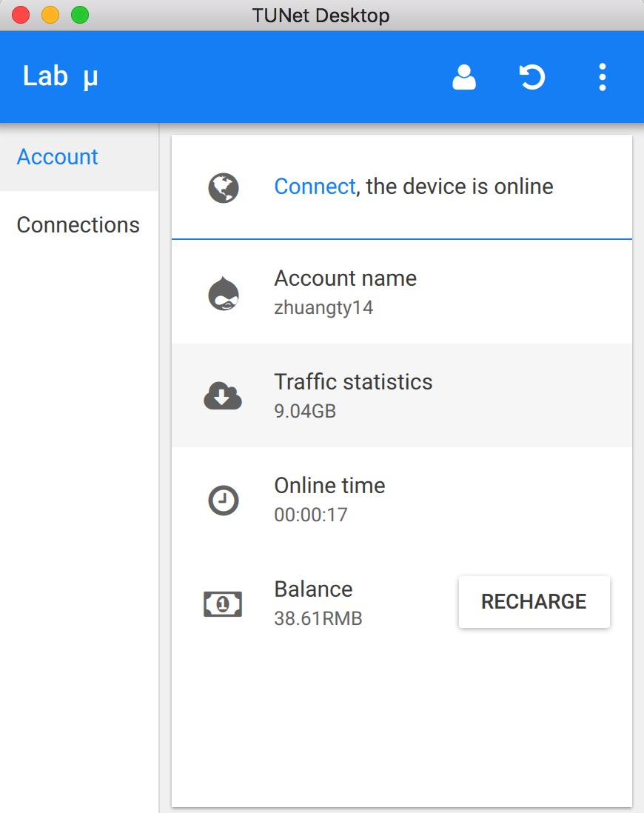

{% extends 'base.html' %}

{% block title %}TUNet Desktop{% endblock %}

{% block styles %}
<!-- build:css styles/tunet-desktop.css -->
<link rel="stylesheet" href="styles/tunet-desktop.css">
<!-- endbuild -->
{% endblock %}

{% block maincss %}
{% endblock %}

{% block content %}

<main>
  <div class="container" id="main">
    <div class="row">
      <div class="col-sm-7 col-xs-12 text-center">
        <div id="logo-wrapper">
          
        </div>
        <div id="intro">
          <h1>TUNet 桌面版</h1>
          <p>
            TUNet 校园自动联网助手桌面版，简化你的校园生活
          </p>
          <p class="visible-xs">
            <b>请在电脑端访问本页面下载</b>
          </p>
        </div>
        <div id="downloads" class="row">
          <a href="downloads/TUNet-Desktop_1eae848_Win.zip" class="col-sm-offset-3 col-sm-2 hidden-xs">
            <div class="icon-wrapper">
              
            </div>
          </a>
          <a href="downloads/TUNet-Desktop_1eae848_OSX.dmg" class="col-sm-2 hidden-xs">
            <div class="icon-wrapper">
              
            </div>
          </a>
          <a href="downloads/TUNet-Desktop_1eae848_Linux.zip" class="col-sm-2 hidden-xs">
            <div class="icon-wrapper">
              
            </div>
          </a>
        </div>
      </div>
      <div class="col-sm-5 hidden-xs">
        
      </div>
    </div>
  </div>

  {% include 'footer.html' %}
</main>

{% endblock %}

{% block scripts %}
<!-- build:js scripts/tunet-desktop.js -->
<script src="scripts/tunet-desktop.js"></script>
<!-- endbuild -->
{% endblock %}
